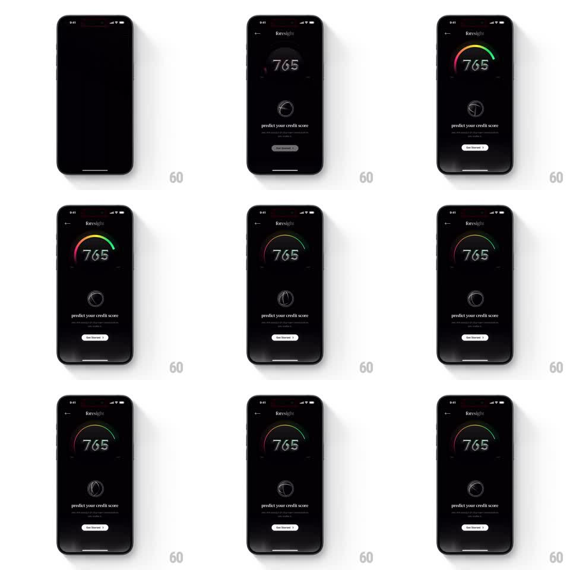

Media
Frame-by-frame

Rebuild this animation 1:1: CRED foresight onboarding intro - on a black screen, the score 765 fades in, a rainbow-gradient gauge arc draws over it, a 3D wireframe sphere rotates below, "predict your credit score" types in, and a "Get Started" button reveals with a staggered entrance.

Rebuild this animation 1:1: CRED foresight onboarding intro - on a black screen, the score 765 fades in, a rainbow-gradient gauge arc draws over it, a 3D wireframe sphere rotates below, "predict your credit score" types in, and a "Get Started" button reveals with a staggered entrance. ## Integration Integration: stack-agnostic spec - springs given as stiffness/damping, timed motions as duration + curve; map every value to your framework and animation library of choice. ## Scene Black screen, "foresight" header with a back chevron. Center top: the score "765" with a semicircular gauge above it filling with a rainbow gradient (red -> amber -> green). Center: a rotating 3D wireframe sphere (latitude/longitude lines). Text: "predict your credit score" with a divider line. Bottom: a white "Get Started" pill button. ## Motion spec Pattern: staged intro with gauge draw and rotating wireframe. - Score 765 fades in (400ms); the gauge arc sweeps from left to its value (900ms ease-out) filling with the rainbow gradient and a soft bloom at the tip. - The wireframe sphere fades in below (300ms) and rotates continuously on its vertical axis (12s per turn, linear), its lines catching a faint shimmer. - "predict your credit score" reveals with a character stagger (20ms per char, 150ms total). - The Get Started button slides up and fades in (translateY 16pt -> 0, 300ms ease-out, 200ms after the text), then idles with a subtle glow pulse. - Idle: the gauge bloom breathes (opacity 0.7 -> 1, 2s) and the sphere keeps rotating. ## Calibration - Everything is elegant and slow - no springs, no bounce; this is a premium intro. - The rainbow gradient is the only color; the rest stays monochrome. ## Reduced motion All elements fade in statically (300ms); the sphere does not rotate. ## Don't miss - The gauge sits above the number, arc opening downward like a halo. - The wireframe sphere shows backface lines faintly - real 3D, not a flat circle.